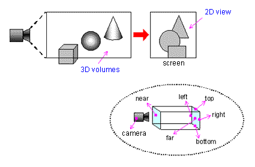
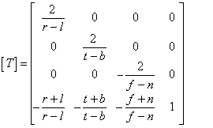
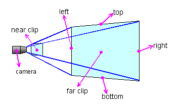
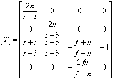
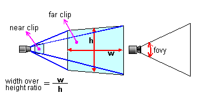
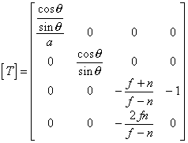
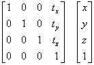
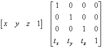

There are two ways to project a virtual 3D world. You can project it so that exact sizes (precise measurements) are depicted as in a floor plan of a house or a cut-away diagram of an engine, or you can project it with perspective that gives an impression of depth at the expense of accurate measurements. The former is known as an "orthographic" or "parallel" projection, and the latter is known as a "perspective" projection. Projection conversion calculations determine the level of perspective that will be provided when you display your virtual 3D world on a TV screen for your game players.
An orthographic projection shows the view volume (the portion of a 3D space that a camera can capture in a picture) as a rectangular parallelepiped without any perspective at all. The world appears flat but accurate measurements are possible given that you know how close or how far away the objects are in the 3D virtual world. Here is an example:

Given the following settings:
the conversion matrix of a orthographic projection looks like this:

Although this matrix seems to be pretty complicated, N64 functions calculate it for you. All you need to do is pass the original settings listed above, so you don't really need to understand the matrix.
The following are examples of N64 functions that calculate the orthographic projection matrix:
A perspective projection shows the view volume (the portion of a 3D space that a camera can capture in a picture) as a quadrilateral pyramid to give the view volume perspective. Here is an example:

Given the following settings:
the conversion matrix of a perspective projection looks like this:

The following are examples of N64 functions that calculate the perspective projection matrix:
In this matrix the ratio of length to width is 1:1, so it is sometimes a little hard to use for actual display on a screen. Therefore, you may need to add a different length to width ratio when preparing your projection matrix as shown here:

Given the following settings:
the conversion matrix of a perspective projection that includes a length to breadth ratio looks like this:

The following N64 functions can be used to calculate this kind of perspective projection matrix:
For example, for parallel movement,
The conversion formula would look like this.

It would look like this for N64.

The conversion matrix is transverse for OpenGL and N64.
Nintendo® Confidential
Copyright © 1999
Nintendo of America Inc. All Rights Reserved
Nintendo and N64 are registered trademarks of Nintendo
Last Updated March, 1999